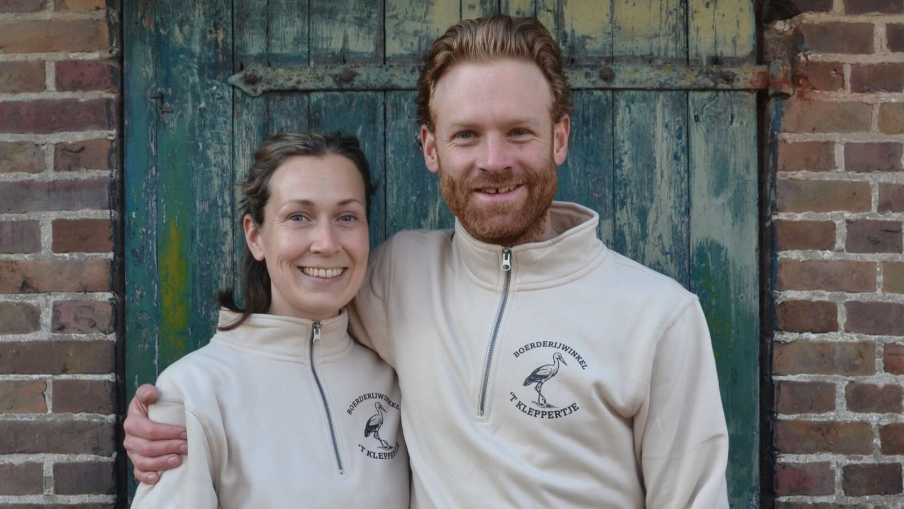
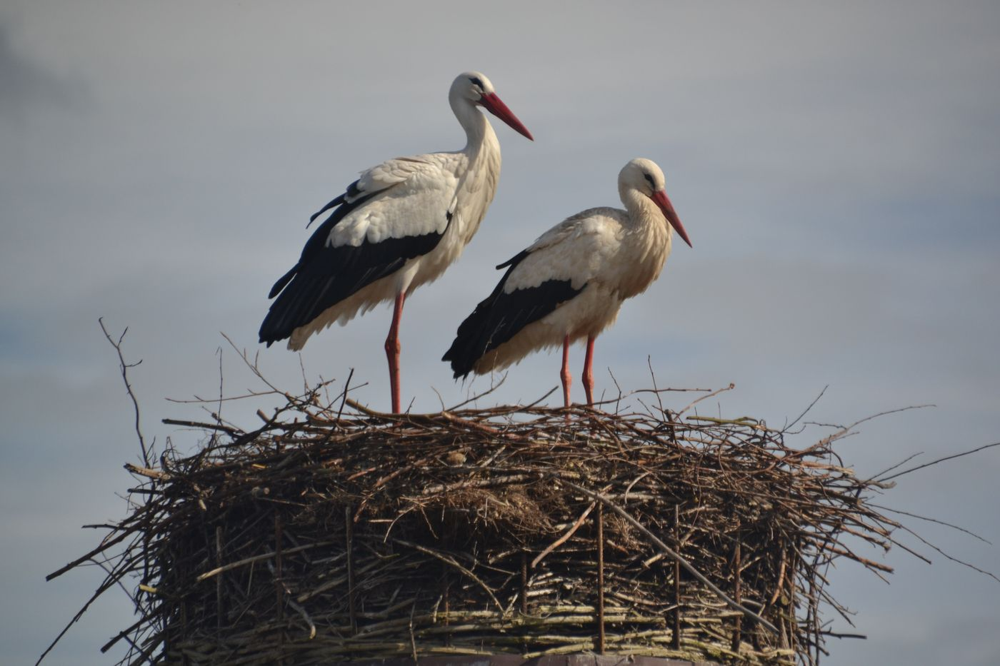

Proef versheid in iedere hap
Boerderijwinkel aan de rand van Etten-Leur. Aardbeien, fruit en groenten uit eigen teelt, aangevuld met honing, zuivel en kaas uit de buurt.
Vers uit eigen kas
Zelfgeteeld waar het kan, aangevuld met lokale producten. Wat er in de winkel ligt, wisselt mee met het seizoen.
Aardbeien
Onze hoofdteelt. Hier aan de Molenaarsstraat worden ze al jaren geteeld.
Eigen teeltBramen en frambozen
Ook uit onze eigen kas, naast de aardbeien.
Eigen teeltGroenten en fruit
Van het seizoen: zelfgeteeld of uit de streek.
SeizoensgebondenHoning, zuivel en kaas
Honing van de lokale imkerij, zuivelproducten en rauwmelkse kazen.
Uit de buurtWie zijn wij?
Wij zijn Ger en Carola Verhoeven. We komen allebei uit een tuindersgezin: bij Ger thuis werden snackkomkommers geteeld, bij Carola thuis aardbeien. Op dat laatste adres wonen we nu, en aardbeien zijn nog altijd onze hoofdteelt. Daarnaast telen we ander fruit en wat groenten.
Een groentewinkel, dat zou wel wat voor ons zijn. Daar hadden we het al jaren over. Sinds april 2026 is de winkel open, met onze eigen groenten en fruit en producten uit de buurt.

Waarom 't Kleppertje?
Vlak achter de winkel staat een ooievaarspaal. Daar woont een ooievaarskoppel: Pim en Suus. Ze komen elk jaar rond februari of maart terug van de trek en blijven tot oktober.
Ooievaars klepperen als welkomstgroet, naar elkaar of naar andere ooievaars die overvliegen. Dat geklepper is luid en duidelijk, en hoort u regelmatig als u bij ons langskomt. Zo kwamen we op de naam.
Openingstijden
's Ochtends werken we in de kas, maar 's middags staan we graag voor u klaar.
Kom langs
U vindt ons aan de rand van Etten-Leur, richting Prinsenbeek.